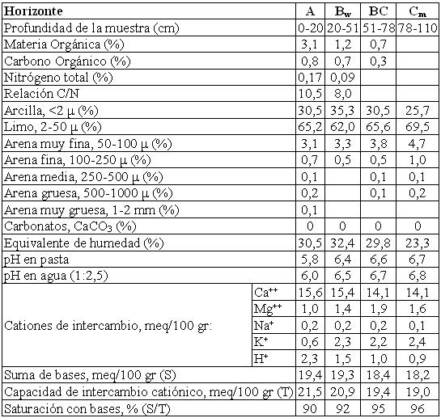

Haplustol típico, limosa fina, mixta, térmica
Capacidad de uso: IIIw
Los suelos que responden a esta Serie son profundos, moderada a imperfectamente drenados, desarrollados a partir de materiales franco-limosos, ocupan la parte central de las líneas de escurrimiento o vías de desagüe bien manifiestas que bisectan los planos altos o lomadas. En superficie el suelo es de textura franco arcilloso limosa, de color pardo grisáceo oscuro (horizonte A), con buen contenido de materia orgánica y bien estructurado. A los 20 cm de profundidad pasa a un horizonte más arcilloso (Bw), de estructura prismática con barnices en la cara de los agregados. La transición al material originario es gradual, encontrándose éste (horizonte C) a una profundidad de 78 cm, es un material franco limoso y masivo. A partir de los 110 cm de profundidad el suelo se encuentra cementado, formando un pan compacto, denso y continuo (duripán). Por su posición en el relieve y por su permeabilidad deficiente, suele anegarse en años excepcionalmente lluviosos, pero en general, pueden tener una mejor provisión de humedad en los períodos secos.
Descripción del perfil típico:
El perfil que represente el modal de la Serie, fue descrito a 6 km al NNO de la localidad de Río Segundo, departamento Río Segundo, provincia de Córdoba.
A 0-20 cm; color en húmedo pardo grisáceo muy oscuro (10YR3/2); franco arcilloso limoso; estructura en bloques subangulares medios moderados; friable en húmedo; ligeramente plástico; ligeramente adhesivo; límite inferior abrupto, suave.
Bw 20-51 cm; color en húmedo pardo oscuro (7,5YR3/2); franco arcillo limoso; estructura en prismas irregulares medios moderados; friable en húmedo; plástico; adhesivo; barnices húmicos arcillosos comunes y medios; límite inferior gradual, suave.
BC 51-78 cm; color en húmedo pardo oscuro (7,5YR3,5/2); franco arcillo limoso; estructura en bloques subangulares medios débiles; tendencia a masivo; friable en húmedo; ligeramente plástico; ligeramente adhesivo; barnices arcillosos escasos y finos; límite inferior gradual.
C 78-110 cm; color en húmedo pardo a pardo oscuro (7,5YR4/4); franco limoso; masivo; muy friable en húmedo; no plástico; no adhesivo; límite inferior abrupto, suave.
Cm 110 cm a +; color en húmedo pardo a pardo oscuro (7,5YR4/4); franco limoso; cementado el 80% de su volumen.
Cuadro Nº21
Datos analíticos Serie LA REYNA
Situación: Latitud: 31º35’35"S Longitud: 63º57’31"O Altitud: 340 m.s.n.m.

|